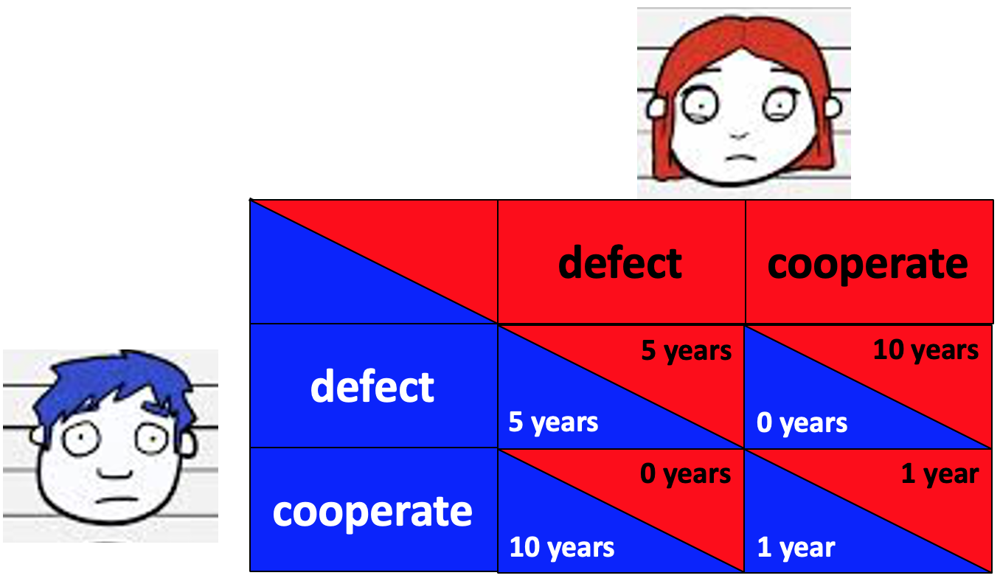

Last time we looked at three simple games: the Dictator Game, Ultimatum Game and the Trust Game. As simple as they were, they shed light on the ways in which people make social decisions. In particular, they highlighted the role that negative and positive reciprocity play in social decision making.
In this class, we will look at some (slightly) more complicated games and how humans perform in these settings that can involve more in-depth reasoning.
No class on social decision making and games would be complete without discussing the Prisoner’s Dilemma.
In this dilemma we imagine that two people (Ms Red and Mr Blue) have been arrested for a minor crime.However, the police suspect they committed a bigger crime and put them in separate rooms. They then offer each of them a deal where they can rat out the other person for a reduced sentence.
Crucially, they can’t communicate to make their decision.
What should they do?
One thing to note here is that the naming in this example is really bad. Normally when we hear the word “cooperate” in a law enforcement setting we are talking about cooperating with the police. That’s exactly NOT what we are talking about with cooperating here. Here we are talking about cooperating with the other prisoner. “Cooperating” with the police here is called “defecting.”
I always find that the wordy description of the Prisoner’s Dilemma is confusing. One way to make things a little clearer, is to visualize all the different possible outcomes in a “payoff matrix.” This is plotted below …
Each row corresponds to an action that Blue can take and each Column to an action that Red can take. For a given combination of Blue and Red’s actions there is one outcome for Blue and one for Red.
Once you get used to reading these matrices, you can easily see that if they both choose to defect they both get 5 years. Or if Blue defects but Red cooperates then Blue gets 0 years and Red gets 10 years, etc …

Let’s focus on the choice facing Blue (the same logic applies equally to the choice facing Red). Should he defect or cooperate?
Well, Blue might think that what he should do depends on what Red will do. So he imagines two scenarios: one where she cooperates and one where she defects.
If Red defects, then looking at the left hand column of the payoff matrix we can see that Blue will get
5 years in prison is better than 10 year in prison. So if Red defects then Blue should defect.
If Red cooperates, then looking at the right hand column of the payoff matrix we can see that Blue will get
0 years in prison is better than 1 year in prison. So if Red cooperates then Blue should defect.
Regardless of what Red does, it is always better for Blue to defect! Indeed, that’s the whole point of the Prisoner’s Dilemma — it’s designed to reward selfish behavior. But, of course, human behavior is never so simple …
In the vanilla Prisoner’s Dilemma Game, people cooperate about 30% of people cooperate. Way more than zero!
So why do they cooperate?
One idea as to why people cooperate more than they should in the Prisoner’s Dilemma is that people play the game as if they will have repeated interactions with the other person. Such a situation might well be the case in a real-world version of the Prisoner’s Dilemma with real police and real prisoners. Pretty much every crime drama ever made makes clear the costs of “ratting” or turning “snitch.”
In the lab, however, the simplest way to have people have multiple interactions with the other person is to have them play the Prisoner’s Dilemma over and over again.
In one very influential study Axelrod used computer simulations to investigate which strategies were most effective in the repeated play Prisoner’s dilemma.
To do this he had different strategies compete against each other. Some of the strategies were simple — such as always defect or always cooperate. Some were complex based on state-of-the-art Artificial Intelligence (in 1984).
Across all of these strategies, one simple strategy was particularly effective. This is called the Tit-for-Tat strategy.
In this strategy the player always starts by cooperating in the first game. What happens next depends on what the other player does in the first game.
This strategy is effective because it will cooperate with a cooperator (in which case everyone only gets 1 year in prison per round) but defects against a defector (in which case everyone gets 5 years per round, so it’s not taken advantage of).
Andreoni and Miller investigated human behavior on the repeated play Prisoner’s Dilemma in 1993.
In this study people played 10 rounds of the Prisoner’s Dilemma against either the same person each round (“Partners” condition) or a different person each round (“Strangers” condition). In addition they had some extra controls in which people played against a computer.
In the Strangers condition people tended to cooperate about 35% of the time on the first round, but then decreased their cooperation over time. Likely as cooperation was punished by Strangers who defect.
In the Partners condition, people cooperated much more (60% of the time), especially at first. Interestingly, on the very last play people were likely to defect, which makes sense because this is identical to a repeated play game.
In addition, a more detailed analysis of the data showed that people actually use tit-for-tat reciprocity. Punishing people if they defect and rewarding people if they cooperate.
If you were a teenager in the 1950s, this was your idea of a fun Saturday night …
Two guys driving full speed towards the edge of a cliff and the first one to jump out is “Chicken.” What could possibly go wrong?
Clearly this is a crazy game, but it turns out that it captures many real-world situations. But before we get there, let’s write down the payoff matrix for Chicken. For simplicity, we’ll put a numerical cost on being called a chicken (-1 points), a reward for winning (+1 point), and a numerical cost on driving over the cliff (-2 points, probably an underestimation!)
Each player has two actions in the game of chicken, they can swerve or keep driving straight.
Unlike the Prisoner’s Dilemma, the best thing to do in Chicken depends on what the other person does …
So to “win” at Chicken you need to convince the other person that you might just be crazy enough to drive straight regardless.
Sounds childish and silly, right? But turns out that the game of Chicken, and the “Madman Theory” required to win it has influenced at least two US Presidents …
Here is a quote attributed to Nixon by his chief of staff talking about playing Chicken with nuclear bombs to try to end the Vietnam war.
I call it the Madman Theory, Bob. I want the North Vietnamese to believe I’ve reached the point where I might do anything to stop the war. We’ll just slip the word to them that, “for God’s sake, you know Nixon is obsessed about communism. We can’t restrain him when he’s angry—and he has his hand on the nuclear button” and Ho Chi Minh himself will be in Paris in two days begging for peace.
This wasn’t just empty talk. The adminstration went to great lengths to convince the North Vietnamese and the Soviet Union that Nixon really was crazy enough to start a nuclear war.
For example (paraphrasing from the Wikipedia page), in October 1969, the Nixon administration indicated to the Soviet Union that “the madman was loose.” Nixon ordered the military to full global war readiness alert and bombers armed with nuclear weapons flew patterns near the border for three days.
Some believe that President Trump has used the same tactics with North Korea and that Kim Jong-un has used the same tactics back.
Just look at this exchange of messages between the two leaders, both trying to convince the other that they might just be crazy enough to launch an attack …
Kim Jong-un
Whatever Trump might have expected, he will face results beyond his expectation. I will surely and definitely tame the mentally deranged U.S. dotard with fire.
Donald Trump
Kim Jong Un of North Korea, who is obviously a madman who doesn’t mind starving or killing his people, will be tested like never before!
Kim Jong-un
It’s not a mere threat but a reality that I have a nuclear button on the desk in my office. All of the mainland United States is within the range of our nuclear strike.
Donald Trump
North Korean Leader Kim Jong Un just stated that the ‘Nuclear Button is on his desk at all times.’ Will someone from his depleted and food starved regime please inform him that I too have a Nuclear Button, but it is a much bigger & more powerful one than his, and my Button works!
And yet, this exchange (and likely much more behind the scenes) lead to the first meeting between the leaders of the two countries in decades!
We can only hope that this will lead to an actual reduction in tensions, because no one wins Chicken if you both “drive straight” into nuclear war!